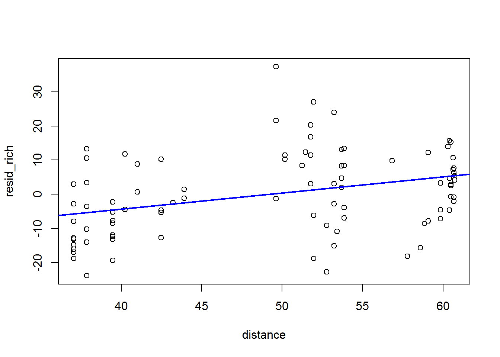
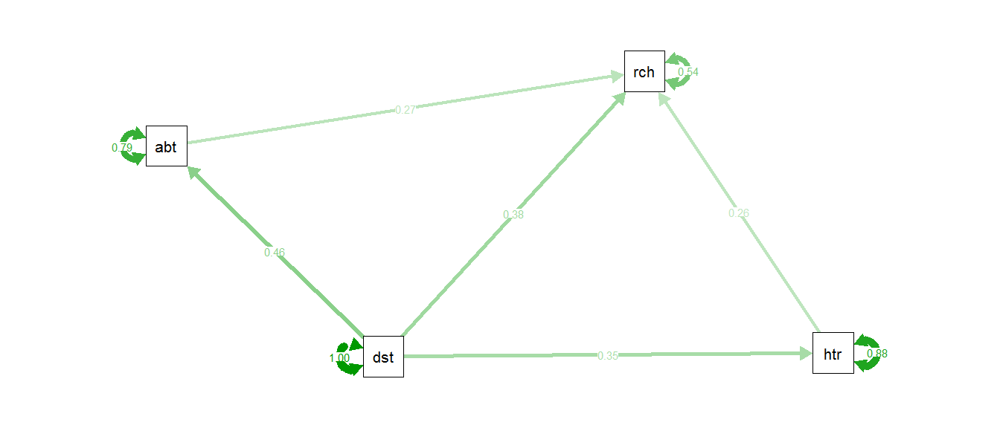

First, let’s review our Path Analysis Example from the SEM lecture.
In this example we were trying to understand patterns in species richness over five years following fire. Parameters were measured in 90 x 1000 \(m^2\) plots. We focused on four measured variables: distance to ocean, abiotic index, spatial heterogeneity, and species richness.
Now let’s review the steps taken in this example. Download the data from Webcampus, “Files” >> “Student led topics” >> “SEM” >> “Keeley_rawdata.csv”
keeley <-read.csv("./Keeley_rawdata.csv", header =TRUE)
summary(keeley) #-- Look at data## distance elev abiotic age
## Min. :37.04 Min. : 60.0 Min. :32.59 Min. : 3.00
## 1st Qu.:39.46 1st Qu.: 202.5 1st Qu.:43.81 1st Qu.:15.00
## Median :51.77 Median : 400.0 Median :48.04 Median :25.00
## Mean :49.23 Mean : 424.7 Mean :49.24 Mean :25.57
## 3rd Qu.:58.40 3rd Qu.: 630.0 3rd Qu.:54.90 3rd Qu.:35.00
## Max. :60.72 Max. :1225.0 Max. :70.46 Max. :60.00
## hetero firesev cover rich
## Min. :0.3842 Min. :1.200 Min. :0.05558 Min. :15.00
## 1st Qu.:0.6246 1st Qu.:3.700 1st Qu.:0.48769 1st Qu.:37.00
## Median :0.6843 Median :4.300 Median :0.63712 Median :50.00
## Mean :0.6833 Mean :4.565 Mean :0.69123 Mean :49.23
## 3rd Qu.:0.7684 3rd Qu.:5.550 3rd Qu.:0.91468 3rd Qu.:62.00
## Max. :0.8779 Max. :9.200 Max. :1.53541 Max. :85.00Our first step is to perform linear regression for each piece of our hypothesized model. These “piecewise” linear regressions tell us some information about our model variables. We can determine whether individual variables are significant in each regression by looking at the p-values for the parameter estimates. Also, we can find the \(r^2\) values for our endogenous variables from the “lm” function in R.
abioticLM <- lm(abiotic~distance, data=keeley) #-- Abiotic caused by distance
heteroLM <- lm(hetero~distance, data=keeley) #-- Heterogeneity caused by distance
richnessLM <- lm(rich~abiotic+hetero,data=keeley) #-- Richness caused by abiotic and heterogeneity
summary(abioticLM)$coefficients
summary(heteroLM)$coefficients
summary(richnessLM)$coefficients
summary(abioticLM)$r.squared
summary(heteroLM)$r.squared
summary(richnessLM)$r.squared## Estimate Std. Error t value Pr(>|t|)
## (Intercept) 29.5537053 4.11762269 7.177371 2.142310e-10
## distance 0.3998271 0.08233372 4.856176 5.158424e-06
## Estimate Std. Error t value Pr(>|t|)
## (Intercept) 0.461802396 0.065045361 7.099698 3.063408e-10
## distance 0.004499205 0.001300611 3.459300 8.370677e-04
## Estimate Std. Error t value Pr(>|t|)
## (Intercept) -21.6224780 10.0651511 -2.148252 3.447302e-02
## abiotic 0.8135516 0.1746343 4.658602 1.136795e-05
## hetero 45.0702119 11.6796513 3.858866 2.181692e-04
## [1] 0.2113455
## [1] 0.1197074
## [1] 0.3667967Remember, an ANOVA is linear regression. An alternative to looking at the summaries for each “lm” object above is to use the “aov” function to determine whether our three hypothesized linear relationships are significant:
summary(aov(abioticLM))
summary(aov(heteroLM))
summary(aov(richnessLM))## Df Sum Sq Mean Sq F value Pr(>F)
## distance 1 1109 1109 23.58 5.16e-06 ***
## Residuals 88 4139 47
## ---
## Signif. codes: 0 '***' 0.001 '**' 0.01 '*' 0.05 '.' 0.1 ' ' 1
## Df Sum Sq Mean Sq F value Pr(>F)
## distance 1 0.1405 0.14045 11.97 0.000837 ***
## Residuals 88 1.0329 0.01174
## ---
## Signif. codes: 0 '***' 0.001 '**' 0.01 '*' 0.05 '.' 0.1 ' ' 1
## Df Sum Sq Mean Sq F value Pr(>F)
## abiotic 1 5248 5248 35.51 5.28e-08 ***
## hetero 1 2201 2201 14.89 0.000218 ***
## Residuals 87 12859 148
## ---
## Signif. codes: 0 '***' 0.001 '**' 0.01 '*' 0.05 '.' 0.1 ' ' 1Notice that the p-values for significance are the same as above.
Because all variables are significant in our piecewise linear regressions, we will retain all terms in our model.
Our next step is to estimate the parameters in our model. Remember, our parameters are the path coefficients and error terms. We can use the \(r^2\) values from our earlier piecewise linear regressions for our endogenous variables and error terms because we are retaining all of those variables in our model. Now we need to estimate the path coefficients.
To standardize our path coefficients, divide the covariance by the standard deviations. There are two ways to do this in R: you can use the “cor” function to display the correlation matrix for all your variables, and then fill in the values. The other way is to use the “lm.beta” function in the package “QuantPsyc”. This will return the standardized path coefficient(s) directly for individual piecewise linear regressions.
cor_matrix <- cor(keeley[,c(1,3,5,8)]) #-- The [,] is matrix notation in which the (row,column) numbers can be specified. In this case, we're saying to use only the numbered columns of data to calculate the correlation matrix.
cor_matrix
library(QuantPsyc)
lm.beta(abioticLM) #-- Path from "distance" to "abiotic".
lm.beta(heteroLM) #-- Path from "distance" to "hetero".
lm.beta(richnessLM) #-- "abiotic" = path from "abiotic" to "richness"; "hetero" = path from "hetero" to richness.## distance abiotic hetero rich
## distance 1.0000000 0.4597233 0.3459875 0.5844775
## abiotic 0.4597233 1.0000000 0.2766418 0.5083485
## hetero 0.3459875 0.2766418 1.0000000 0.4569914
## rich 0.5844775 0.5083485 0.4569914 1.0000000
## distance
## 0.4597233
## distance
## 0.3459875
## abiotic hetero
## 0.4135769 0.3425788Note that the “lm.beta” function and the “cor” function return the same values.
We will now proceed to fill in our estimates for our model:
Next we test for mediation. In a mediation relationship, there is a direct effect between an independent variable and a dependent variable. There are also indirect effects between an independent variable and a mediator variable, and between a mediator variable and a dependent variable.
The degree to which the direct effect changes as a result of including the mediating variable is referred to as the mediational effect. Testing for mediation involves running a series of regression analyses for all of the causal pathways and some method of estimating a change in direct effect.
In our example, we have two mediations: the effect of “distance” on “richness” is mediated by two mediator variables: “abiotic” and “hetero”. We need to investigate whether these mediations are fully explaining the effect of “distance” on “richness.” One way to determine this is to look at the residuals from the linear regression of “richness” by “abiotic” and “hetero.” The residuals will be the remaining variance in “richness” not explained by “abiotic” and “hetero.” We would expect no structure in the residuals if “abiotic” and “hetero” are fully explaining all effects. However, if we saw a relationship between the residuals and “distance”, we would suspect that there is some effect of “distance” on “richness” that is not being sufficiently explained, or mediated, by “abiotic” and “hetero.” Let’s do this in R:
#-- First we'll extract the residuals from the linear regression of richness by abiotic and hetero.
resid_rich <- resid(richnessLM)
#-- Next, we'll perform a linear regression of these residuals by distance. If this relationship is significant, it would indicate we are missing a path in our model because abiotic and hetero are incomplete mediators.
residLM <- lm(resid_rich~distance,data=keeley)
summary(residLM)$coefficients #-- The relationship is signficant (we could also test this using the "aov" function)
#-- To help visualize this, we'll plot the residuals against distance and show the fitted linear regression.
plot(resid_rich~distance,data=keeley)
abline(residLM,col="blue",lwd=2)
## Estimate Std. Error t value Pr(>|t|)
## (Intercept) -23.2326282 6.8078379 -3.412629 0.0009741965
## distance 0.4718762 0.1361258 3.466472 0.0008176835As distance increases, the values of the residuals increase. Because this relationship is signficant, we conclude that we need to add a path in our model from “distance” to “richness”.
Now, we would need to perform a new regression: lm(rich~abiotic+hetero+distance) in order to estimate the new \(r^2\) for “richness”. For the purposes of this example, we are going to show what would happen if you went directly to testing goodness of fit without investigating mediation. (In the end, the final model chosen will be the same by either process.)
Next, we evaluate goodness of fit. Our first check is to use d-separation to determine whether the observed data adequately account for the modeled probabilities.
Rewording from earlier, the d-separation criterion for any pair of variables involves:
In the context of our model (ignoring the path from “distance” to “richness”), if we wanted to formulate a d-separation statement for the path from “distance” to “richness”:
Thus, we conclude that the residuals for “distance” and “richness” are predicted to be uncorrelated.
Because writing out the entire set of all possible d-statements would involve overlap and would increase the possibility of Type II error, we will identify what is called the “basis set”, which is the minimum number of d=separation statements that is sufficient to predict the entire set of d-separation statements. In this case:
\[ \textrm{distance}\perp \textrm{richness} | (\textrm{abiotic, hetero})\\ \textrm{biotic}\perp \textrm{hetero} | (\textrm{distance}) \] Each of these d-separated statements predicts a (conditional) probabilistic independence:
The composite probability for the basis set is Fisher’s C test: \[ C=-2*\sum_{i=1}^{k}Ln(p_{i}) \] Where \(p_{i}=\) p-values of all tests of conditional independence; C has a chi-square distribution with 2k degrees of freedom; k = number of elements of the basis set.
We conclude that the predicted variables are conditionally independent if \(p>05\). If \(p<.05\), there are likely to be missing paths (in order to account for the lack of independence).
We’ll use some built-in functions in R to determine the fit test:
library(piecewiseSEM)## Warning in sample.int(.Machine$integer.max - 1L, 1L): '.Random.seed' is not
## an integer vector but of type 'NULL', so ignored#-- First, build a model object using the correct syntax:
modList <- list(
lm(abiotic~distance, data=keeley),
lm(hetero~distance,data=keeley),
lm(rich~abiotic+hetero,data=keeley)
)
#-- Next, run the Fisher C test:
sem.fisher.c(modList,data=keeley,.progressBar=FALSE)## fisher.c df p.value
## 1 21.86 4 0Because the p-value < 0.05, we know that the model is missing a pathway. Let’s suppose that pathway is a direct pathway from “distance to ocean” to “richness” (as we concluded from our evaluation of mediation). So, that means our new script will be:
#-- First, build a model object using the correct syntax:
modList2 <- list(
lm(abiotic~distance, data=keeley),
lm(hetero~distance,data=keeley),
lm(rich~abiotic+hetero+distance,data=keeley) #-- note that we've added "distance" as a direct cause of "richness"
)
#-- Next, run the Fisher C test:
sem.fisher.c(modList2,data=keeley,.progressBar=FALSE)## fisher.c df p.value
## 1 3.35 2 0.187Now, our p-value is > 0.05. This means we can conclude our model is supported by our data. We can use the package semPlot to visualize our final model:
library(lavaan)
library(semPlot)
#--First create an object that stores the relationships between the variables:
modList3 <- '
abiotic~distance
hetero~distance
rich~abiotic+hetero+distance
'
#--Next, we need to create a model object that "semPaths" can work with. In this case, we use the "sem" function in the library "lavaan" to create our SEM model object "fullfit1".
fullfit1 <- sem(modList3, data=keeley)
#--Then visualize the model:
semPaths(fullfit1,rotate=1,layout="spring","std")
Note that the “sem” function in the package “lavaan” uses maximum likelihood estimation by default for estimating the model parameters. This compares the modeled covariance matrix to the observed covariance matrix. For path analysis, the ML estimates are likely to be very close to the piecewise estimates we generated earlier using Least Squares from our linear regressions.
Using this model, we would make the following inferences:
We would like to add another measured variable, Cover, to our model.
Fit and evalute the above model